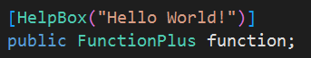
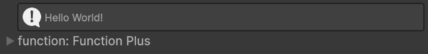

Introduzione
AnimLink è un plugin di animazione leggero per Unity
che offre metodi di estensione intuitivi e concisi per eseguire le
animazioni delle proprietà più comuni. Supporta il tweening di
spostamento, rotazione e ridimensionamento del
Transform, nonché la trasparenza, il colore e altre
proprietà degli elementi UI o dei componenti di rendering. Con
AnimLink non è necessaria alcuna configurazione
complessa: basta invocare nel codice i metodi di estensione
corrispondenti (ad esempio DoPosition,
DoScale, DoAlpha ecc.) per ottenere
animazioni fluide. AnimLink include diversi tipi di
easing (Ease) e modalità di loop, e supporta la
composizione di più animazioni in sequenza. Inoltre,
AnimLink include anche alcune funzionalità
aggiuntive, come un pannello visivo che consente agli utenti di
creare e modificare sequenze di animazione in modo intuitivo.
Caratteristiche di questo plugin: basato su coroutine, semplice
e facile da usare, altamente personalizzabile e leggero.
Inizio veloce
-
Scarica il plugin:
AnimLink V.0.8.1-beta
Nota: per poter utilizzare la modalità anteprima, cerca e installaEditorCoroutinenel Unity Package Manager -
Importa il plugin
AnimLinknel tuo progetto Unity. -
Aggiungi uno script al GameObject su cui vuoi applicare
l'animazione e scrivi:
using UnityEngine; using AnimLink; // Prima di usare AnimLink nello script, è necessario importare il namespace AnimLink. public class HelloWorld : MonoBehaviour { public CanvasGroup canvasGroup; void Start() { // Movimento: sposta l'oggetto lungo l'asse X fino alla posizione 3f, in 2 secondi transform.DoPosition(Axis.X, 3f, 2f, 1, Base_AnimType.None, Ease.Linear).Play(); // Scala: scala l'oggetto localmente a (2,2,2), in 2 secondi transform.DoScale(new Vector3(2f, 2f, 2f), 2f, 1, Base_AnimType.None, Ease.Linear) .Play(); // Trasparenza: cambia l'opacità del CanvasGroup UI a 0 (completamente trasparente), in 1 secondo canvasGroup.DoAlpha(0f, 1f, 1, ValueAnimType.None, Ease.Linear).Play(); } }
Nell'esempio sopra, transform.DoPosition equivale a
modificare transform.position tramite interpolazione,
ottenendo così un movimento fluido;
transform.DoScale modifica
transform.localScale;
canvasGroup.DoAlpha invece modifica la proprietà
alpha di CanvasGroup (CanvasGroup
viene comunemente usato per controllare collettivamente l'opacità
di più elementi UI). In questo modo puoi facilmente aggiungere
animazioni agli oggetti direttamente dal codice.
✅ Suggerimento: Vuoi saperne di più? Dai
un'occhiata agli esempi nella cartella
AnimLink/RunTime/Examples!
🎬 Istruzioni per l'uso del Pannello Visuale
Per migliorare l'efficienza della configurazione delle animazioni
e l'esperienza visiva, il plugin
AnimLink include un sistema di
script personalizzati per l'Editor che permette di modificare i
comandi di animazione direttamente nell'Inspector di Unity. Di
seguito vengono mostrati il pannello visuale, il flusso operativo
e altre funzionalità.
🔹 Componente AnimationCommandGroup
AnimationCommandGroup è uno dei componenti chiave di
AnimLink, utilizzato per gestire in modo
centralizzato più comandi di animazione. Ogni comando controlla un
comportamento animato (ad esempio spostamento, transizione di
opacità, cambio colore, ecc.). Il relativo
AnimationCommandGroupPropertyDrawer disegna
nell'Inspector una lista sequenziale di comandi.
Per usarlo, basta aggiungere il componente
AnimationCommandGroup all'oggetto di scena:
nell'Inspector potrai aggiungere, modificare e
rimuovere visivamente ogni comando animazione. Ogni commando
consente di impostare il tipo di animazione (es.
DoPosition, DoAlpha), il valore
obiettivo, la durata, il tipo di easing, la modalità di loop e
altro, e di cliccare un pulsante di anteprima per vedere in tempo
reale l'effetto.
Inoltre, ogni gruppo di comandi di animazione può essere
configurato per essere riprodotto in modo simultaneo (cioè allo
stesso tempo) o sequenziale. In questo modo è possibile creare
rapidamente effetti animati complessi senza scrivere alcun codice
di animazione, migliorando notevolmente l'efficienza dello
sviluppo.
🎥 Video di esempio: aggiunta, configurazione e utilizzo di un gruppo di comandi
🔹 Componente AnimationCommand
Se ti serve un singolo effetto animato, puoi usare direttamente il
componente AnimationCommand, che rappresenta un
singolo comando. Ogni comando include tipo di animazione
(spostamento, scala, opacità, ecc.), valore obiettivo, durata,
easing, modalità di loop e altri parametri. Nel pannello
Inspector è disegnato tramite
AnimationCommandPropertyDrawer per un editing
intuitivo, permettendoti di configurare l'animazione senza
scrivere codice.
🎥 Video di esempio: utilizzo di AnimationCommand
🔹 Funzionalità Aggiuntive
Il plugin include inoltre diversi strumenti ausiliari per migliorare l'esperienza di editing:
-
HelpBoxAttribute: mostra un messagio di suggerimento nell'Inspector.
Esempio di codice:

Esempio di effetto:

-
Componente
FunctionPlus: ispirato a UnityEvent nell'Inspector, ma ottimizzato per questo plugin, offre una configurazione più flessibile delle chiamate di funzione.FunctionPlussupporta diversi tipi di argomenti (tra cuiint,float,string,List<T>,Vector3,Quaternion), ma solo metodi con ritornovoidoIEnumerator.🎥 Video di esempio: utilizzo di FunctionPlus
✅ Suggerimento: il componente
FunctionPluspuò essere utilizzato all'interno diAnimationCommandGroupe non inAnimationCommand.
Non è ancora pronta, ma arriverà presto, restate sintonizzati…
404
Pagina non trovata
→Torna all'introduzione